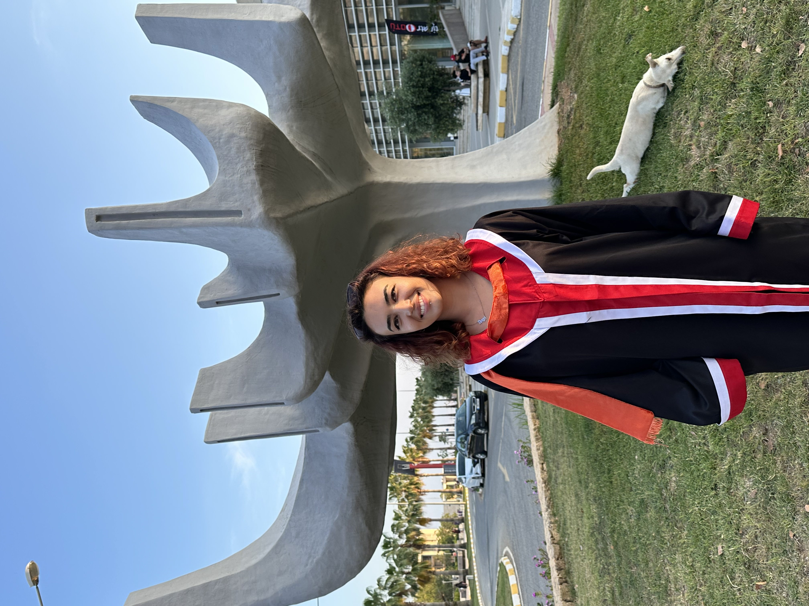
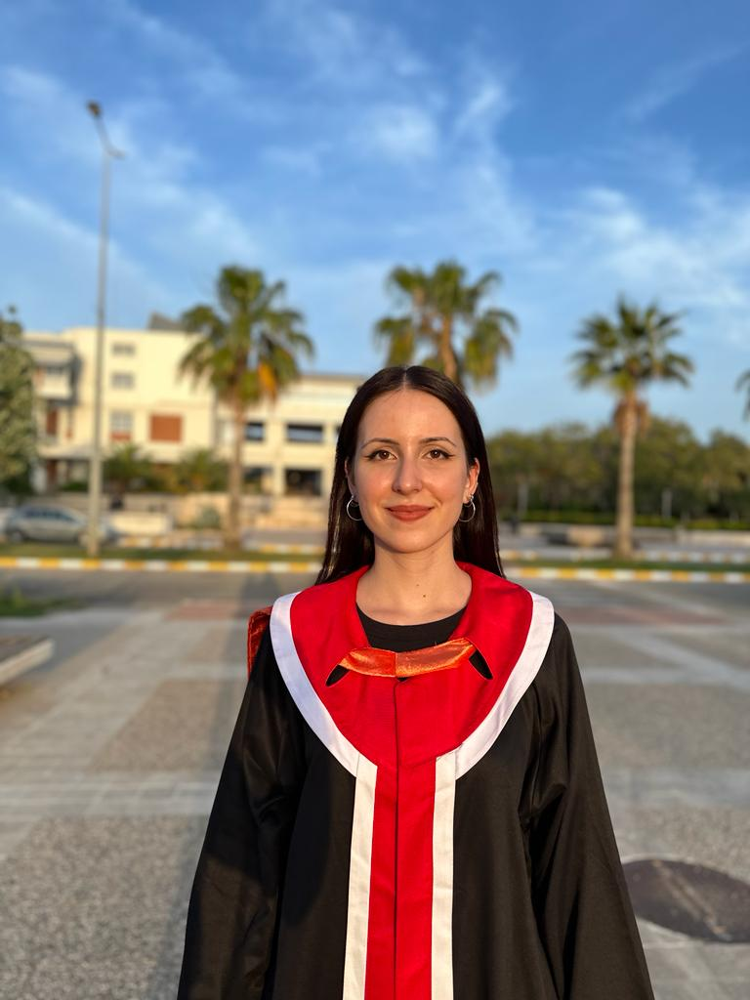

You can contact us for more information about the queue simulation tool:  Fatma Erem Aksoy : erem.aksoy@metu.edu.tr  Ece Erseven : ece.erseven@metu.edu.tr Ahmed Zendah : ahmed.zendah@metu.edu.tr Ceazar Hatokah : cezar.hatka@metu.edu.tr